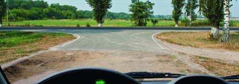
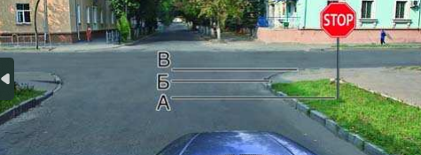
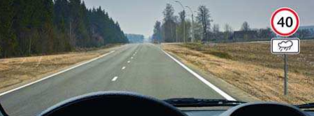
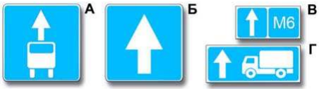
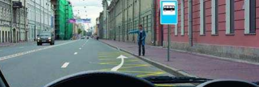

Вопрос 1
Вопрос 2
Вопрос 3
Вопрос 4
Вопрос 5
Вопрос 1: Выезжая с грунтовой дороги, Вы попадаете:

На главную
На равнозначную
Вопрос 2: В каком месте Вы должны остановиться

Перед знаком (А)
Перед перекрестком (Б)
Перед краем пересекаемой проезжей части (В)
Вопрос 3: В каком случае Вам необходимо двигаться со скоростью до 40 км/ч?

Во всех случаях
Только в том случае, когда покрытие на дороге влажное
Вопрос 4: Какие из знаков устанавливают в начале дороги с односторонним движением?

Только A
Только Б
Б и Г
Б и В
Вопрос 5: Можете ли Вы остановиться в этом месте для посадки или высадки пассажиров?

Да
Да, если Вы не создадите помех движению маршрутных транспортных средств.
Нет
Результаты опроса